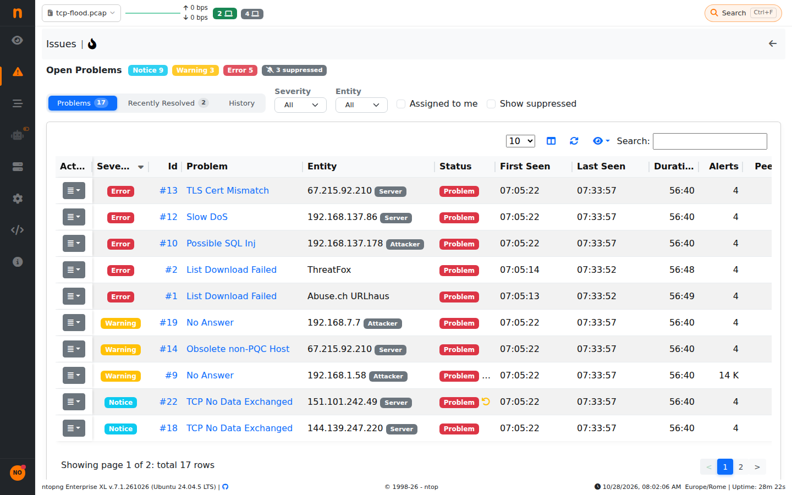
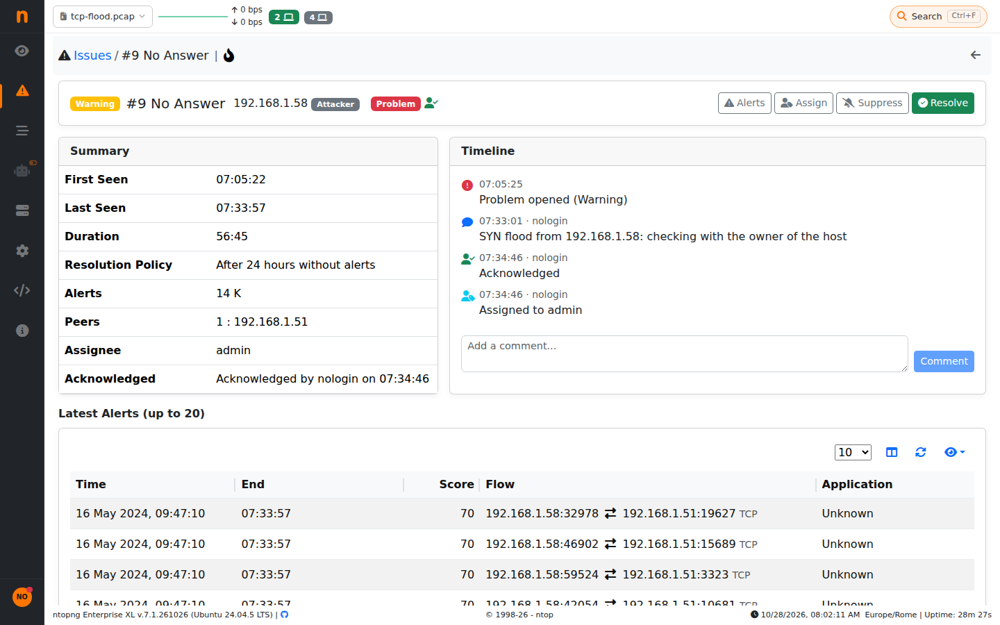

Issues
Alerts are events: when the same problem keeps happening (for instance a host scanning the network, contacting hundreds of servers) it generates many alerts, one per flow or per check. Issues group the alerts of the same problem into a single item with a status, so that each problem is seen, handled and notified once.
Note
This feature is available from the Enterprise XXL license. It is an experimental feature, off by default: enable Issues in Settings > Preferences > Alerts. When it is off, no issue is built, the Issues pages and REST API are not available, and the recipients sending Issues receive the alerts. The issues built before are kept, and shown again when it is turned on.
An issue is either Open (a problem) or Resolved. Its alerts are called signals: they are still stored and shown in the Alerts Explorer, and each of them is linked to its issue.
Only alerts at least as severe as Issues Minimum Severity (in Settings > Preferences > Alerts, Warning by default) open or reopen an issue. Less severe alerts still update the issues already open.
At most Issues Maximum Open issues (same page, 50000 by default) are open at the same time: above it no new issue is opened, the alerts are still stored, and a warning is logged. Open issues are kept in memory, so raise it with care.

Issues
How Alerts Are Grouped
Alerts of the same type and on the same entity belong to the same issue:
Host, interface, network, SNMP, system and the other alerts are grouped by alert type and entity (e.g. the host, or the interface), and by alert subtype when the alert has one.
Flow alerts are grouped by alert type and by the host the alert is about: the attacker when known, otherwise the victim, otherwise the server. The other hosts of the flows are the peers of the issue (their number and a sample are shown). A flow with several alerts is a signal of an issue for each of its alert types.
The severity of an issue is the highest severity of its signals: when it is raised the issue is escalated. The score of an issue is the sum of the scores of its signals: a problem that keeps happening scores more than a single alert of the same severity.
How Issues Are Resolved
Each alert type resolves its issues in one of these ways:
When the alert ends: alerts that are engaged (e.g. thresholds) resolve the issue when the last engaged alert of the issue is released. An alert released only because it was engaged for too long, or because ntopng was restarted, does not resolve the issue unless it is not engaged again within a few minutes.
After 24 hours without alerts: alerts that have no duration (e.g. flow alerts) resolve the issue when no signal is received for 24 hours.
Only by a user: alerts that indicate a compromise are never resolved automatically. These are Malware Host Contacted, Malicious Fingerprint, Malicious SHA1 Certificate, Data Exfiltration, DNS Data Exfiltration, Lateral Movement, Web Mining and Local Host Blacklisted.
In the issues list and in the details, an open issue shows how it is resolved: a Manual badge when only a user can resolve it, otherwise an icon whose tooltip tells it is resolved automatically when its alert ends (spinner icon) or at what time, if no new alert arrives (hourglass icon). The Resolved filter shows the open issues resolved in each way: select Only by a user for the issues waiting for a user.
A new signal within Issues Reopen Window (in Settings > Preferences > Alerts, 60 minutes by default, from 5 minutes to 24 hours) of the resolution reopens the issue instead of opening a new one, so that flapping problems are tracked as one issue. The reopened issue keeps its history: severity (the highest reached), assignee, suppression, first seen and counters. The resolved issues are kept in memory for this time: a longer window takes more memory.
Informational alerts that do not report a problem (e.g. User Activity, Process Notification, List Download Succeeded, Cloud Reconnected, Shell Script Executed, Fail2Ban Executed, Network Discovery Executed) do not open issues. Neither do some alerts raised for each flow when an alert of the hosts already reports the same problem, this includes for example Obsolete non-PQC Flow (see Obsolete non-PQC Host).
Issues are tracked per ntopng instance, across all its interfaces.
Issues Page
The Issues page is in the Alerts menu. The dashboard shows the open issues in place of the Engaged Alerts: a badge with the number of open issues of each severity (emergency, critical, error and warning), colored as the most severe with open issues (red for emergency and critical, orange for error, yellow for warning, gray without open issues). Click on a severity to show its issues.
The All, Last 48h, Last 24h and Last Hour tabs show only the issues first seen (open since) in that time.
Above the issues, a heatmap shows the selected time (the last 48 hours for All) in slots of 30 minutes (48 hours), 15 minutes (24 hours) or 1 minute, one row per severity (only those from Issues Minimum Severity): the color of a slot is the number of issues opened, reopened or escalated to that severity in it (move the mouse over a slot for the number). Issues active for a long time are counted when they start, not over all their life. The heatmap takes into account the filters.
The page has three views:
Open Issues: the issues not resolved yet (problems).
Recently Resolved: the issues resolved in the last 24 hours, useful to spot problems that keep coming back.
History: all the issues active in the selected time range.
The search box above the table finds the issues whose entity contains the
text (e.g. part of an IP address). It also finds an issue by its ID: type
the number, with or without # (e.g. 1573 or #1573).
The Filters box on the left counts the issues by family (entity type, e.g. host, flow, interface), severity, category, MITRE tactic, problem (alert type), assignee, tag, suppression and how open issues are resolved: click on a value to show only its issues, again to remove it. The selected values are shown as badges above the table (click on a badge to remove it, or on Clear filters). Values of the same filter are alternatives (e.g. two severities), different filters must all match; the counts of each filter take into account the other filters.
The List, By Problem and By Host tabs show the issues as a list, or grouped by problem (alert type) or by host (the issues of a host and the flow issues about it; the issues of the other entities, e.g. interfaces, by entity). Each group shows its number of issues, its highest severity, its alerts, its score (the sum of the scores of its issues) and when it was last seen, and expands into its issues, the most severe first. Groups are sorted by highest severity, then by number of issues, and take into account the filters.
Click on the entity of an issue (e.g. a host) to show only the issues of that entity: for a host, its issues and the flow issues about it.
The Tags column shows the tags of the issue: all the tags its alerts carried when they were triggered (see Tags). These are the tags of the check that triggered the alerts (see Check Tags), for all the entities, and the tags of the host or of the flow, for host and flow alerts. A flow issue gets the tags of the flow (e.g. those bound to its application or to its risks), not the tags of its hosts, and only the tags of its own check, not those of the other checks that triggered alerts on the same flow. Click on a tag to show only the issues with that tag. The Tag filter on the left lists the tags of the issues with their counts; the other tags are under Other tags, so that any tag can be chosen.
The Assignee filter shows the users the issues are assigned to (the current user first, marked as me) and the unassigned issues: an issue assigned to several users is counted for each of them. In the open issues, the Suppression filter shows the suppressed issues, hidden unless Suppressed is selected (select also Not suppressed to show all the issues).
The issues of a host are also shown in the Issues tab of the host details (the fire icon): the issues of the host and the flow issues about it, whatever its role in the flows (attacker, victim or server).
Issue Details
Clicking on an issue opens its details:
the summary: first and last seen, duration, how the issue is resolved, the number of signals, the score, the peers, the tags, the assignee;
the timeline: what happened to the issue (opened, escalated, resolved, reopened) and who did what, with the comments of the users;
the latest alerts of the issue. The Alerts button opens the Alerts Explorer with all the alerts of the issue, using the Issue filter.

Issue Details
Actions
The following actions are available from the issues list and from the details:
Acknowledge: tells the other users that someone is handling the problem. The acknowledgement is cleared when the issue is escalated or reopened.
Assign: assigns the issue to one or more users (select none to unassign it).
Change Severity: sets the severity of an open issue, e.g. to escalate it. A higher severity is an escalation: the acknowledgement is cleared and the recipients of the issues are notified. Alerts more severe than the severity chosen still raise it. The severity set by a user is marked with a user icon.
Comment: adds a comment to the timeline.
Suppress: stops the notifications of the issue for a time (1 hour to 1 week), e.g. during a maintenance. The issue keeps tracking its signals.
Resolve: closes the problem, with an optional comment added to the timeline (e.g. the reason).
Reopen: reopens a resolved issue. An issue reopened by a user is then resolved only by a user.
In the Open Issues view, the Resolve All button (next to the active filters) resolves all the open issues matching the filters, on all the pages of the list, after a confirmation with their number and an optional comment, added to the timeline of each issue resolved (e.g. select Notice in the Severity filter to close all the notice issues). Each issue is resolved as by its Resolve action: the recipients of the issues are notified, and a new alert within Issues Reopen Window reopens it. The suppressed issues are resolved only when shown (Suppressed selected in the Suppression filter).